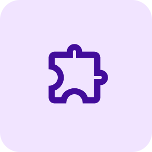
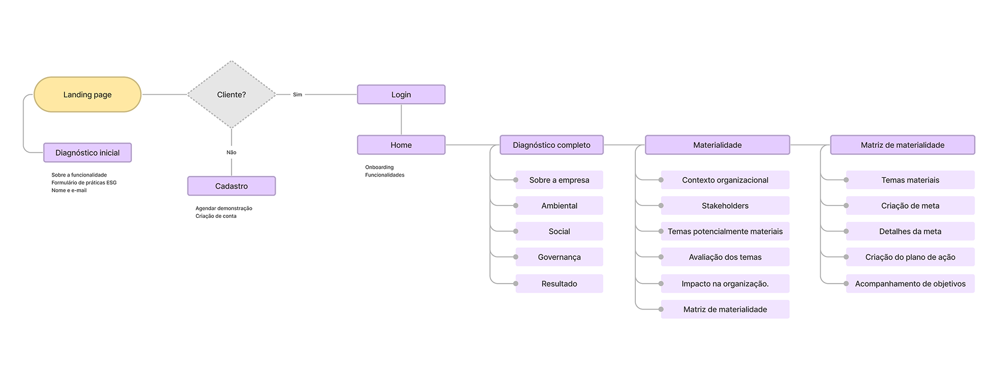
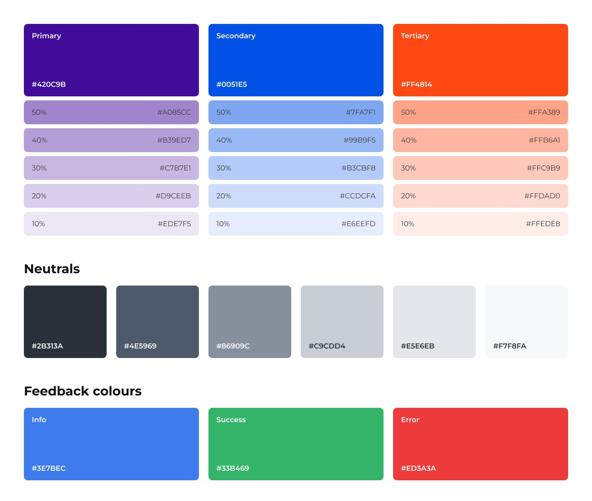
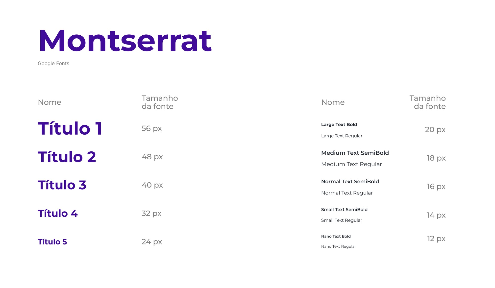
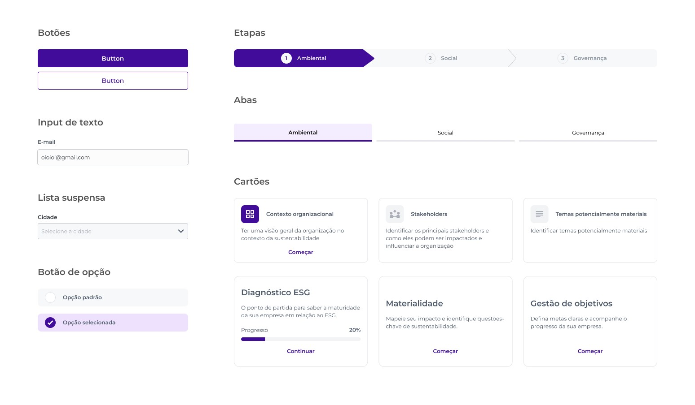
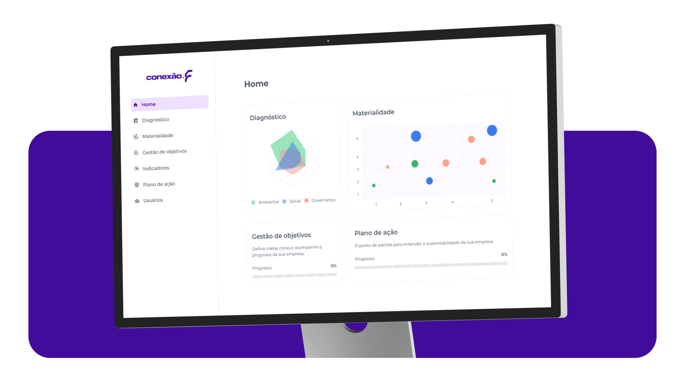
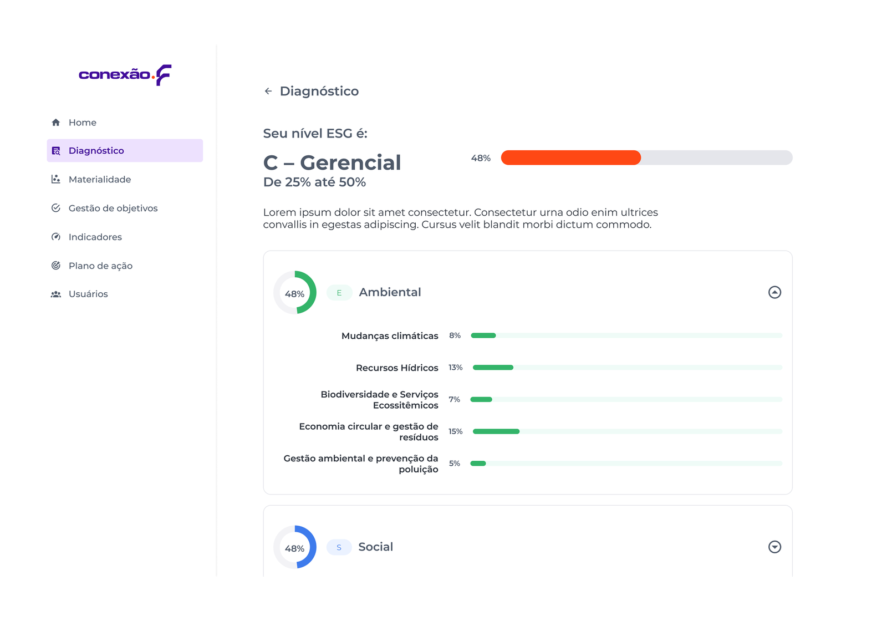
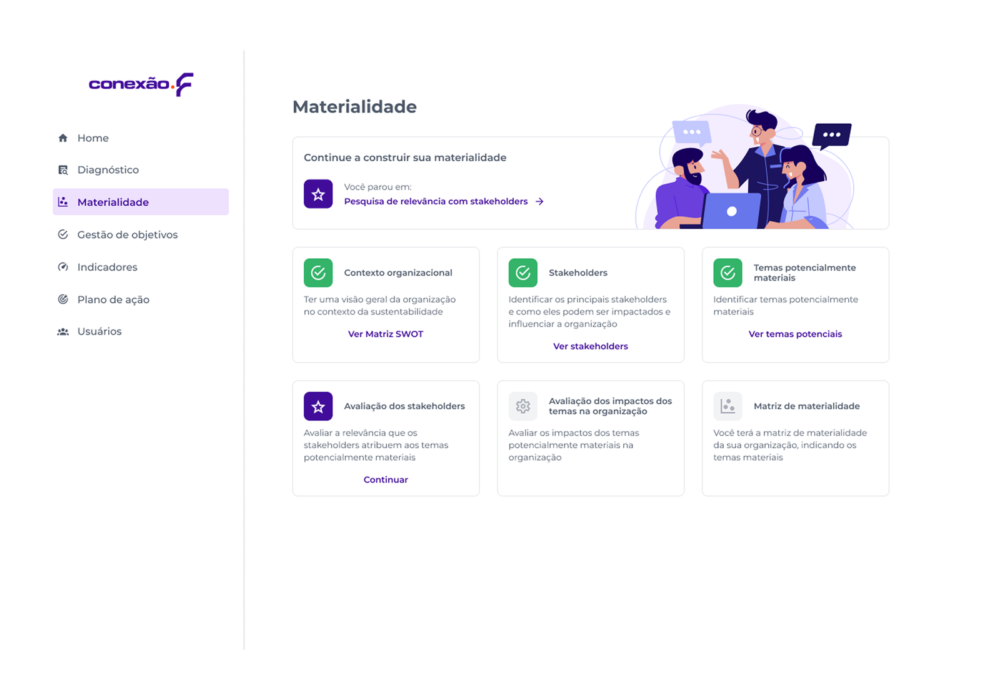
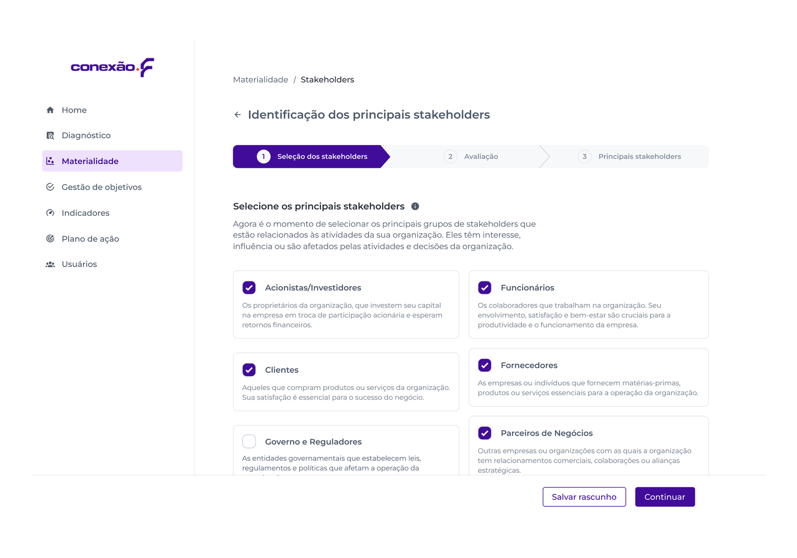

Plataforma para gerenciar ações de ESG
Projeto
O cliente precisava de uma solução para apoiar empresas na implantação de práticas ESG. O projeto envolveu imersão, entrevistas e definição colaborativa de funcionalidades, resultando em uma plataforma para diagnóstico, gestão de temas materiais e metas.
Etapas do projeto

Case completo
Esta página apresenta o processo de design do projeto. Se quiser conhecer também as etapas de descoberta, definição e ideação, além de entender toda a estratégia e as decisões criativas que construíram este trabalho, acesse o case completo no blog:

Plataforma ESG: estratégia, processo e impacto
Case inclui pesquisa, workshop de Lean Inception e design de solução. Clique para entender os bastidores, decisões e aprendizados.

Prototipação
Após colaborar com o cliente no workshop, iniciamos a etapa de prototipação que aborda o fluxo de navegação, guia de estilo, desenho da interface, prototipação em alta fidelidade e testes de usabilidade.
Fluxo de navegação
O fluxo de navegação foi fundamental para representar as etapas que os usuários percorrerão ao interagir com a plataforma, ao visualizar o fluxo de forma visual, garantimos que todos do time tinham a mesma visão da experiência do usuário desejada e dos objetivos do projeto.

Guia de estilo
Criei um guia de estilo para a plataforma, com definições de cores e tipografia baseadas na identidade visual do cliente. A paleta de cores reflete a marca de forma moderna e coerente, enquanto a tipografia foi escolhida para garantir legibilidade e personalidade na interface.
Cores

Tipografia

UI Design
Eu criei mais de 50 componentes para o projeto e um UI Kit completo que me ajudou a unificar e manter a consistência, simplificando o trabalho de prototipação.

Telas da Plataforma ESG
Para transformar a pesquisa e os componentes em uma experiência digital, desenvolvi as principais telas da Plataforma ESG.
Tela Inicial / Dashboard
A tela inicial apresenta uma visão geral dos indicadores de ESG da empresa, com acesso rápido aos diagnósticos pendentes, metas em andamento e próximas ações recomendadas. O layout prioriza informações acionáveis para facilitar a tomada de decisão.

Diagnóstico
Após o preenchimento do formulário, a plataforma gera automaticamente o diagnóstico ESG da empresa, classificando o nível de maturidade em uma escala visual. Os resultados são organizados por dimensão (Ambiental, Social e Governança), destacando os pontos fortes e as áreas com maior potencial de evolução. Isso oferece uma visão estratégica para as próximas ações.

Módulo de Materialidade
Esse é o módulo responsável por ajudar as empresas a identificar os temas ESG mais estratégicos para o seu contexto. O design organiza e exibe todas as etapas do processo, deixando o caminho mais transparente para o usuário.
A proposta é facilitar a priorização dos temas que representam riscos ou oportunidades reais para o negócio, por meio da construção de uma matriz visual que apoia a tomada de decisão.

